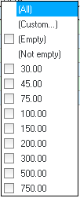
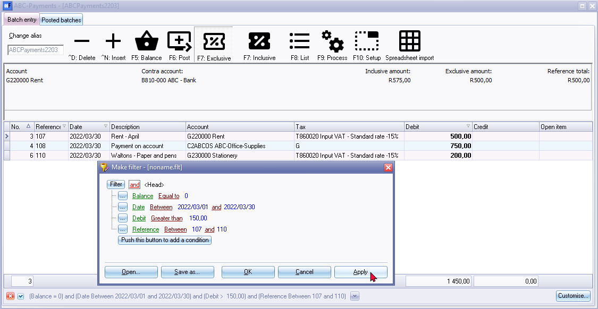
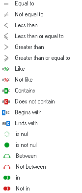

Filters
Filter Options in Column Headings
The grid is very powerful because of its sophisticated easy to use filter and sort features does this quicker than any other way. It has the ability to group, sort and filter any data column(s) on most screens in a Set of Books with only a view mouse clicks.
If you need to view or find specific data, there are carious option available to locate and find your data. Some of the options are: 
- Sort - Click on a column heading to sort and list the data ascending or descending sequence. All the data is by default displayed ascending; from the smallest to the highest value (e.g. a-z or 0-9) according to the record number (e.g. line number in a batch, etc.) To change the sort order from ascending (e.g. a-z or 0-9) to descending (e.g. z-a or 9-0) select a column and click on it. If you click on it again it will change back to ascending sequence.
- Drag and Drop Columns - You may click on a column and drag it to the left or to the right to change the sequence your data is displayed on screens.
- Filter - Click in the arrow to list the data in a specific column. A list displaying the data, as well as an All option and a Custom... option in the selected column will be displayed. For example, if amounts are entered in a batch entry screen, all the amounts will be listed. By adding a tick next to a specific amount, only transactions, matching that amount will be listed.
- Custom - You can easily build customised filters according to your needs. These filter files can be saved and opened for future use.
Custom Filters
Once you have selected an option on a list, the your selection will be displayed at the bottom section of the Batch entry screen as follows:

You may click on the Customise option on a column list or click on the Customise button to:
- Make a filter (add or delete conditions and groups).
- Save a filter.
- Open a filter.
Make a Custom Filter
To make a filter:
- Click on the Customise option on a column list or click on the Customise button.
- Select an operator (i.e. and, or, and not, or not).
- Click on the Filter button (or on the … button) and select one of the following options on the context menu:
- New condition
- New group
- Delete row (If you click on the Filter button, you may delete all rows (conditions and groups)).
- Select a column from the list of available data applicable to the screen. In this example, the Date is selected.
- Select a filter condition. In this example, the Between is selected. Another field is opened to select another date.
- Once you have created your conditions or groups, click on the Apply button.
- Click on the OK button to close and exit this Make filter screen.
Conditions
- Equal to - list or display all values which is the same as the specified value.
- Not equal to - list or display all values which is not the same as the specified value.
- Less than - list or display all values smaller than the specified value.
- Less than or equal to - list or display all values smaller or equal to the specified value.
- Greater than - list or display all values greater than the specified value.
- Greater than or equal to - list or display all values greater or equal to the specified value.
- Like - list all values similar to the specified value.
- Not like - list all values not similar to the specified value.
- Contains - list all values which contains (includes) the specified value.
- Does not contain - list all values which does not contain (excludes) the specified value.
- Begins with - list all values which starts with the specified value.
- Ends with - list all values which ends with the specified value.
- Is null - excludes any value entered, will not be listed or displayed.
- Is not null - is not zero - any value which is not equal to zero will be listed or displayed.
- Between - Specify specific values, etc. to include only matching values. (For example, between reference numbers 105 and 111 will exclude any lower numbers than 105 and higher numbers than 111).
- Not between - Specify specific values, etc. to exclude values. (For example, Not between reference numbers 105 and 111 will exclude these numbers and will list any lower numbers than 105 and higher numbers than 111).
- In - In a specified value.
- Not in - Not in a specified value.
|
|
If a Date for a column condition is selected, additional conditions will be available (i.e. is this month, is this year, is next 7 days, is next week, is next 14 days, is next two weeks, is next 30 days, is next month, is future, is this week, is yesterday, is today, is last 7 days, is last week, is last 14 days, is last two weeks, is last 30 days, is last month, is last year, is past, is this week, etc. |

Save Custom Filter Files
To Save a Custom Filter file:
- Once you have sorted or filtered your data with the Make filter utility, click on the Save as... button. The "Save active filter as" screen will be displayed.
- Select a Directory in which you wish to save the custom filter file.
- Enter a file name.
- Click on the Save button to save the Filter in a (*.flt) Filter file format. You may then at any later stage open the saved *.flt file.
Open Custom Filter Files
To Open a Saved a Custom Filter file:
- Once you have sorted or filtered your data with the Make filter utility, click on the Open... button. The "Open saved filter as" screen will be displayed.
- Select a Directory in which you have saved the custom filter file.
- Select a valid filter file.
- Click on the Open button. The selected filter file's name will be displayed in the titlebar of the make filter screen.